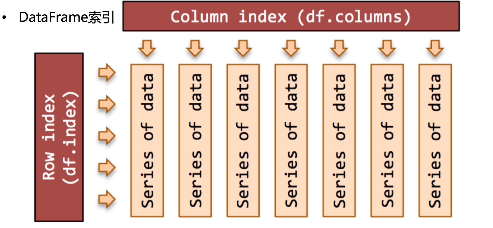

Pandas的索引操作
索引对象Index
1. Series和DataFrame中的索引都是Index对象
示例代码：
print(type(ser_obj.index))
print(type(df_obj2.index))
print(df_obj2.index)
运行结果：
<class 'pandas.indexes.range.RangeIndex'>
<class 'pandas.indexes.numeric.Int64Index'>
Int64Index([0, 1, 2, 3], dtype='int64')
2. 索引对象不可变，保证了数据的安全
示例代码：
# 索引对象不可变
df_obj2.index[0] = 2
运行结果：
---------------------------------------------------------------------------
TypeError Traceback (most recent call last)
<ipython-input-23-7f40a356d7d1> in <module>()
1 # 索引对象不可变
----> 2 df_obj2.index[0] = 2
/Users/Power/anaconda/lib/python3.6/site-packages/pandas/indexes/base.py in __setitem__(self, key, value)
1402
1403 def __setitem__(self, key, value):
-> 1404 raise TypeError("Index does not support mutable operations")
1405
1406 def __getitem__(self, key):
TypeError: Index does not support mutable operations
常见的Index种类
- Index，索引
- Int64Index，整数索引
- MultiIndex，层级索引
- DatetimeIndex，时间戳类型
Series索引
1. index 指定行索引名
示例代码：
ser_obj = pd.Series(range(5), index = ['a', 'b', 'c', 'd', 'e'])
print(ser_obj.head())
运行结果：
a 0
b 1
c 2
d 3
e 4
dtype: int64
2. 行索引
ser_obj[‘label’], ser_obj[pos]
示例代码：
# 行索引
print(ser_obj['b'])
print(ser_obj[2])
运行结果：
1
2
3. 切片索引
ser_obj[2:4], ser_obj[‘label1’: ’label3’]
注意，按索引名切片操作时，是包含终止索引的。
示例代码：
# 切片索引
print(ser_obj[1:3])
print(ser_obj['b':'d'])
运行结果：
b 1
c 2
dtype: int64
b 1
c 2
d 3
dtype: int64
4. 不连续索引
ser_obj[[‘label1’, ’label2’, ‘label3’]]
示例代码：
# 不连续索引
print(ser_obj[[0, 2, 4]])
print(ser_obj[['a', 'e']])
运行结果：
a 0
c 2
e 4
dtype: int64
a 0
e 4
dtype: int64
5. 布尔索引
示例代码：
# 布尔索引
ser_bool = ser_obj > 2
print(ser_bool)
print(ser_obj[ser_bool])
print(ser_obj[ser_obj > 2])
运行结果：
a False
b False
c False
d True
e True
dtype: bool
d 3
e 4
dtype: int64
d 3
e 4
dtype: int64
DataFrame索引
1. columns 指定列索引名
示例代码：
import numpy as np
df_obj = pd.DataFrame(np.random.randn(5,4), columns = ['a', 'b', 'c', 'd'])
print(df_obj.head())
运行结果：
a b c d
0 -0.241678 0.621589 0.843546 -0.383105
1 -0.526918 -0.485325 1.124420 -0.653144
2 -1.074163 0.939324 -0.309822 -0.209149
3 -0.716816 1.844654 -2.123637 -1.323484
4 0.368212 -0.910324 0.064703 0.486016

2. 列索引
df_obj[[‘label’]]
示例代码：
# 列索引
print(df_obj['a']) # 返回Series类型
print(df_obj[[0]]) # 返回DataFrame类型
print(type(df_obj[[0]])) # 返回DataFrame类型
运行结果：
0 -0.241678
1 -0.526918
2 -1.074163
3 -0.716816
4 0.368212
Name: a, dtype: float64
<class 'pandas.core.frame.DataFrame'>
3. 不连续索引
df_obj[[‘label1’, ‘label2’]]
示例代码：
# 不连续索引
print(df_obj[['a','c']])
print(df_obj[[1, 3]])
运行结果：
a c
0 -0.241678 0.843546
1 -0.526918 1.124420
2 -1.074163 -0.309822
3 -0.716816 -2.123637
4 0.368212 0.064703
b d
0 0.621589 -0.383105
1 -0.485325 -0.653144
2 0.939324 -0.209149
3 1.844654 -1.323484
4 -0.910324 0.486016
高级索引：标签、位置和混合
Pandas的高级索引有3种
1. loc 标签索引
DataFrame 不能直接切片，可以通过loc来做切片
loc是基于标签名的索引，也就是我们自定义的索引名
示例代码：
# 标签索引 loc
# Series
print(ser_obj['b':'d'])
print(ser_obj.loc['b':'d'])
# DataFrame
print(df_obj['a'])
# 第一个参数索引行，第二个参数是列
print(df_obj.loc[0:2, 'a'])
运行结果：
b 1
c 2
d 3
dtype: int64
b 1
c 2
d 3
dtype: int64
0 -0.241678
1 -0.526918
2 -1.074163
3 -0.716816
4 0.368212
Name: a, dtype: float64
0 -0.241678
1 -0.526918
2 -1.074163
Name: a, dtype: float64
2. iloc 位置索引
作用和loc一样，不过是基于索引编号来索引
示例代码：
# 整型位置索引 iloc
# Series
print(ser_obj[1:3])
print(ser_obj.iloc[1:3])
# DataFrame
print(df_obj.iloc[0:2, 0]) # 注意和df_obj.loc[0:2, 'a']的区别
运行结果：
b 1
c 2
dtype: int64
b 1
c 2
dtype: int64
0 -0.241678
1 -0.526918
Name: a, dtype: float64
3. ix 标签与位置混合索引
ix是以上二者的综合，既可以使用索引编号，又可以使用自定义索引，要视情况不同来使用，
如果索引既有数字又有英文，那么这种方式是不建议使用的，容易导致定位的混乱。
示例代码：
# 混合索引 ix
# Series
print(ser_obj.ix[1:3])
print(ser_obj.ix['b':'c'])
# DataFrame
print(df_obj.loc[0:2, 'a'])
print(df_obj.ix[0:2, 0])
运行结果：
b 1
c 2
dtype: int64
b 1
c 2
dtype: int64
0 -0.241678
1 -0.526918
2 -1.074163
Name: a, dtype: float64
注意
DataFrame索引操作，可将其看作ndarray的索引操作
标签的切片索引是包含末尾位置的